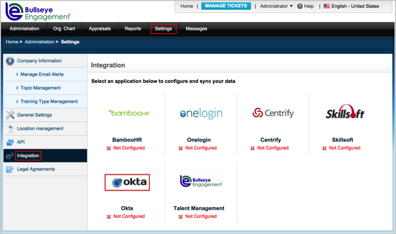
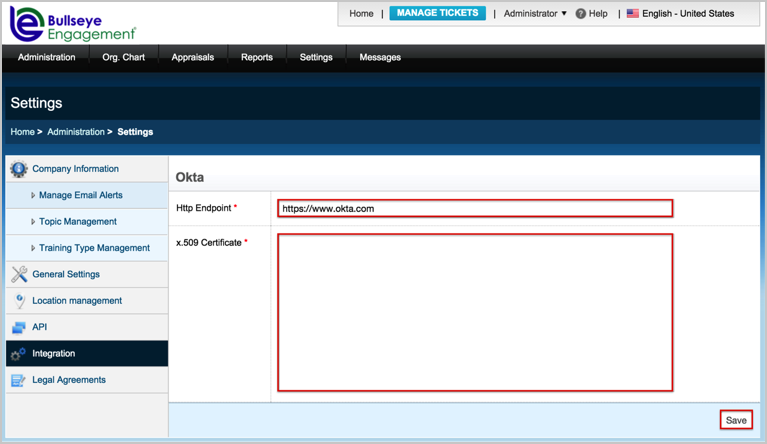
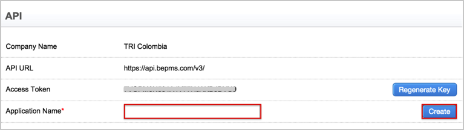
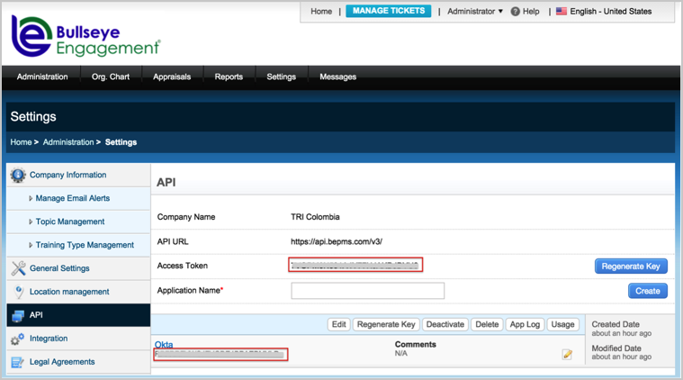

Log in to BullseyeEngagement as as Administrator.
Navigate to Settings > Integration, then click the Okta logo:

Enter the following:
Http Endpoint: Enter https://www.okta.com.
x.509 Certificate: Copy and paste the following:
Sign into the Okta Admin Dashboard to generate this variable.
Click Save.

Navigate to Settings > API.
Enter the following:
An Application Name, for example, Okta.
Click Create.

Make a copy of your Access Token and Application Key:

In Okta, select the General tab for the BullseyeEngagement app, then click Edit.
Enter the values you just copied for Access Token and Application Key into the corresponding fields.
Click Save.

Done!
Notes:
IdP-initiated flows are supported.
SP-initiated flows and Just In Time (JIT) provisioning are not supported.